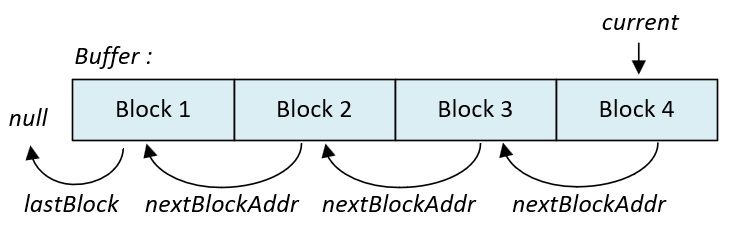
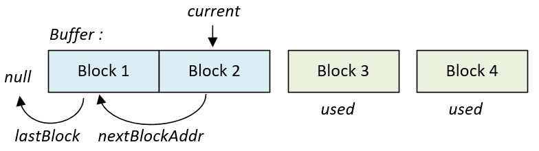
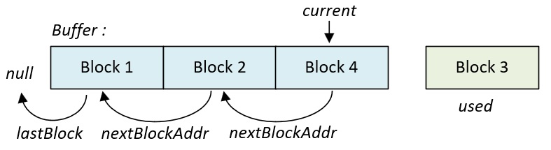
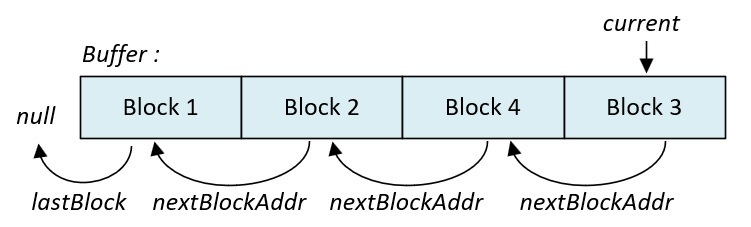
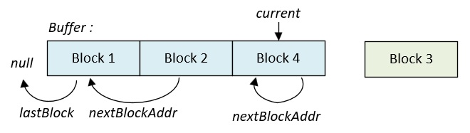

Allouer des blocs de taille fixe avec les Pools
Le module pool permet d'allouer des blocs mémoire de taille fixe. Cette page détaille le fonctionnement et l'utilisation des fonctions de ce module.
1. Synthèse des fonctions
Les fonctions de ce module sont déclarées dans le fichier mk_pool.h :
| Fonction | Description |
|---|---|
| mk_ |
Initialise le buffer d'une pool. |
| mk_ |
Crée une pool mémoire. |
| mk_ |
Alloue un bloc mémoire. |
| mk_ |
Désalloue un bloc mémoire. |
| mk_ |
Alloue un bloc mémoire (thread safe). |
| mk_ |
Désalloue un bloc mémoire (thread safe). |
| mk_ |
Récupère le nombre de blocs disponibles dans une pool. |
| mk_ |
Récupère l'adresse du prochain bloc disponible dans une pool. |
| mk_ |
Supprime une pool. |
2. Fonctionnement
Une pool est construite à partir d'un buffer fourni par l'application. Ce buffer est découpé en plusieurs blocs de taille identique. Chaque bloc ainsi créé peut être alloué ou désalloué. La figure ci-dessous montre l'état initial d'une pool composée de 4 blocs mémoire :

Lors de son initialisation, l'ensemble des blocs de la pool sont chaînés en écrivant l'adresse du prochain bloc disponible dans l'en-tête de chaque bloc (ou la valeur null pour le dernier bloc).
💬
Lorsqu'une allocation est réalisée, le noyau retire le premier bloc de la chaîne et le fournit à l'application. Le pointeur current est alors actualisé pour pointer sur le prochain bloc disponible. La figure ci-dessous montre l'état de la pool après deux allocations successives :

Les blocs 3 et 4 ne font plus partie de la chaîne et la pool ne possède plus que deux blocs.
Lorsqu'une désallocation est réalisée, le noyau effectue l'opération inverse en ajoutant un nouvel élément à la chaîne. Les figures ci-dessous montrent l'état de la pool lorsque les blocs 4 puis 3 ont été désalloués :


Lors d'une désallocation, le pointeur current est modifié pour pointer systématiquement sur le dernier bloc entré. La pool fonctionne donc selon un algorithme de type LIFO, c'est-à-dire que le dernier bloc désalloué sera le prochain bloc alloué.
Lorsque l'ensemble des blocs a été alloué, le pointeur current devient nul. L'application doit donc attendre une désallocation avant de pouvoir allouer un nouveau bloc.
Lors de chaque désallocation, le noyau vérifie que l'adresse est bien dans le buffer de cette pool et qu'elle est bien alignée sur un début de bloc. Néanmoins, il ne vérifie pas si le bloc mémoire a déjà été désalloué.
⚠️
Un bloc mémoire désalloué plusieurs fois corrompt le gestionnaire d'allocation de taille fixe. Les blocs précédemment disponibles ne le sont plus et deux allocations successives peuvent retourner la même adresse. Deux tâches peuvent donc partager un même bloc sans le savoir.
La figure ci-dessous montre la situation où le bloc 4 est désalloué deux fois successivement :

Lors de chaque nouvelle allocation, le gestionnaire fournira toujours l'adresse du bloc 4. Les blocs 1 et 2 ne pourront plus jamais être alloués.
3. Avantages et inconvénients
Un gestionnaire d'allocation de taille fixe possède les avantages suivants :
- ✔Il fournit toujours la même taille de bloc, le phénomène de fragmentation ne peut donc pas se produire.
- ✔Il n'alloue pas dans le tas (heap) mais dans son buffer applicatif.
- ✔Ses durées d'allocation et de désallocation sont fixes, il est donc déterministe car son architecture ne nécessite aucune recherche pour allouer ou désallouer un bloc.
Néanmoins, son principal défaut est intrinsèque à sa fonction, il ne peut allouer que des blocs de taille fixe. Il faut donc créer une pool par taille de données à allouer.
4. Utilisation
La création d'une pool s'effectue à partir des fonctions mk_pool_initArea et mk_pool_create. L'exemple ci-dessous présente l'initialisation d'un gestionnaire de taille fixe de 12 blocs :
/* On définit une structure pour l'exemple */ /* Sa taille est de 4 mots */ typedef struct T_mkDataStructure T_mkDataStructure; struct T_mkDataStructure { uint32_t data1; uint32_t data2; uint32_t data3; uint32_t data4; }; /* On définit la taille du buffer de la pool */ /* On souhaite pouvoir allouer 12 structures T_mkDataStructure */ #define K_POOL_SIZE ( 12 * ( sizeof ( T_mkDataStructure ) >> 2 ) ) /* Déclaration du buffer de la pool */ K_MK_UNPRIVILEGED_BSS_MEMORY uint32_t g_poolBuf [ K_POOL_SIZE ]; /* Déclaration d'un pointeur de pool */ K_MK_UNPRIVILEGED_BSS_MEMORY T_mkPool* g_pool; /* Une tâche quelconque */ void mk_task ( void ) { /* Déclaration de la variable de retour */ T_mkCode l_result = K_MK_OK; /* Déclaration d'une structure contenant les caractéristiques du buffer */ T_mkPoolArea l_area = { }; /* Initialisation du buffer de la pool */ /* La taille est exprimée en mots 32 bits */ l_result = mk_pool_initArea ( &l_area, g_poolBuf, K_POOL_SIZE ); /* Création de la pool */ /* Celle-ci n'est pas protégée donc accessible aux tâches */ /* privilégiées et non privilégiées */ l_result |= mk_pool_create ( &l_area, &g_pool, K_MK_AREA_UNPROTECTED, sizeof ( T_mkDataStructure ) >> 2, /* Taille de la pool */ 12 ); /* Nombre de blocs dans la pool */ /* ... */ for ( ;; ) ; }
Suite à sa création, les blocs de la pool peuvent être alloués ou désalloués au
sein d'une même tâche en
utilisant les fonctions
mk_
/* Une tâche quelconque */ void mk_task1 ( void ) { /* ... */ /* On déclare un pointeur qui contient l'adresse du bloc alloué */ T_mkDataStructure* l_block = K_MK_NULL; /* Allocation d'un premier bloc de mémoire */ /* Le bloc peut être remis à zéro ou non en utilisant les constantes */ /* K_MK_POOL_CLEAR et K_MK_POOL_NO_CLEAR */ l_block = mk_pool_alloc ( g_pool, K_MK_POOL_CLEAR ); /* Si la valeur retournée n'est pas nulle alors l'allocation a réussi */ if ( l_block != K_MK_NULL ) { /* Utilisation du bloc par le programme ... */ l_block->data1 = 1; l_block->data2 = 2; l_block->data3 = 3; l_block->data4 = 4; /* ... */ /* Désallocation du bloc */ l_result = mk_pool_free ( g_pool, l_block ); /* Si la fonction retourne K_MK_OK, la désallocation a réussi */ if ( l_result == K_MK_OK ); else { /* Si K_MK_ERROR_PARAM, au moins un des 2 paramètres est */ /* invalide, mauvaise instance de pool, mauvaise adresse du bloc */ /* ou bloc n'appartenant pas à la pool. */ /* Si K_MK_ERROR_RIGHT, une tâche non privilégiée */ /* ne peut pas manipuler une pool protégée */ } } /* ... */ }
Lorsque la pool est partagée entre plusieurs
tâches, les fonctions mk_
/* Tâche 1 */ void mk_task1 ( void ) { /* ... */ /* Allocation d'un bloc */ /* La tâche ne doit pas se bloquer s'il n'y a pas de bloc disponible */ l_result = mk_pool_allocSafe ( g_pool, &l_block, K_MK_POOL_NO_CLEAR, 0 ); /* La fonction retourne K_MK_OK ou K_MK_ERROR_MALLOC en fonction */ /* de la disponibilité du bloc ou une erreur */ if ( l_result == K_MK_OK ) { /* Utilisation du bloc par le programme ... */ l_block->data1 = 1; l_block->data2 = 2; l_block->data3 = 3; l_block->data4 = 4; /* ... */ /* Désallocation du bloc */ l_result = mk_pool_freeSafe ( g_pool, l_block ); /* Si la fonction retourne K_MK_OK, la désallocation a réussi */ if ( l_result == K_MK_OK ); else { /* Gestion des erreurs ... */ /* K_MK_ERROR_PARAM, K_MK_ERROR_ISR, K_MK_ERROR_RIGHT */ } } /* Aucun bloc n'est disponible ... */ else if ( l_result == K_MK_ERROR_MALLOC ); else { /* Gestion des autres erreurs ... */ /* K_MK_ERROR_PARAM, K_MK_ERROR_ISR, K_MK_ERROR_RIGHT */ } /* ... */ } /* Tâche 2 */ void mk_task2 ( void ) { /* ... */ /* Allocation d'un bloc en spécifiant un timeout non nul */ /* La tâche se bloque pendant 10 ticks s'il n'y a pas de */ /* bloc disponible */ l_result = mk_pool_allocSafe ( g_pool, &l_block, K_MK_POOL_NO_CLEAR, 10 ); /* La fonction retourne K_MK_OK ou K_MK_ERROR_MALLOC en fonction */ /* de la disponibilité du bloc */ if ( l_result == K_MK_OK ) { /* Utilisation du bloc par le programme ... */ l_block->data1 = 1; l_block->data2 = 2; l_block->data3 = 3; l_block->data4 = 4; /* ... */ /* Désallocation du bloc */ l_result = mk_pool_freeSafe ( g_pool, l_block ); /* Si la fonction retourne K_MK_OK, la désallocation a réussi */ if ( l_result == K_MK_OK ); else { /* Gestion des erreurs ... */ /* K_MK_ERROR_PARAM, K_MK_ERROR_ISR, K_MK_ERROR_RIGHT */ } } /* Aucun bloc n'est disponible ... */ else if ( l_result == K_MK_ERROR_MALLOC ); else { /* Gestion des autres erreurs ... */ /* K_MK_ERROR_PARAM, K_MK_ERROR_ISR, K_MK_ERROR_RIGHT */ } /* ... */ } /* Tâche 3 */ void mk_task3 ( void ) { /* ... */ /* Allocation d'un bloc en spécifiant une attente infinie */ /* La tâche se bloque tant qu'il n'y a pas de bloc disponible */ l_result = mk_pool_allocSafe ( g_pool, &l_block, K_MK_POOL_NO_CLEAR, K_MK_TASK_WAIT_FOREVER ); /* La fonction retourne K_MK_OK ou potentiellement une erreur */ /* Pour une attente infinie, le bloc est obligatoirement disponible */ if ( l_result == K_MK_OK ) { /* Utilisation du bloc par le programme ... */ l_block->data1 = 1; l_block->data2 = 2; l_block->data3 = 3; l_block->data4 = 4; /* ... */ /* Désallocation du bloc */ l_result = mk_pool_freeSafe ( g_pool, l_block ); /* Si la fonction retourne K_MK_OK, la désallocation a réussi */ if ( l_result == K_MK_OK ); else { /* Gestion des erreurs ... */ /* K_MK_ERROR_PARAM, K_MK_ERROR_ISR, K_MK_ERROR_RIGHT */ } } else { /* Gestion des autres erreurs ... */ /* K_MK_ERROR_PARAM, K_MK_ERROR_ISR, K_MK_ERROR_RIGHT */ } /* ... */ }
Les fonctions mk_
/* Test si au moins un bloc est disponible */ T_mkAddr l_addr = mk_pool_available ( g_pool ); /* Une valeur non nulle indique un bloc disponible */ if ( l_addr != K_MK_NULL ) { /* Attention, le bloc est disponible mais n'est pas alloué */ }
/* Récupération du nombre de blocs disponibles */ uint32_t l_numberOfBlockAvailable = mk_pool_count ( g_pool ); /* Si au moins un bloc est disponible */ if ( l_numberOfBlockAvailable > 0 ) { /* Faire quelque chose ici */ }
⚠️
Les fonctions mk_
Lorsque la pool n'est pas partagée, ces fonctions peuvent être utilisées librement sans précaution particulière. En effet, le risque que la valeur retournée par ces fonctions soit devenu obsolète suite à une préemption n'existe pas.
La dernière fonction de l'API est la fonction mk_
/* Suppression de la pool */ T_mkCode l_result = mk_pool_delete ( g_pool ); /* Si une erreur s'est produite */ if ( l_result != K_MK_OK ) { /* Gestion des erreurs ... */ /* K_MK_ERROR_PARAM, K_MK_ERROR_ISR, K_MK_ERROR_RIGHT */ }
5. Protéger ses pools
Les gestionnaires d'allocation de taille fixe peuvent être
créés avec les attributs K_
Lorsque l'attribut K_
/* Création d'une pool protégée par une tâche privilégiée */ /* Cette pool peut seulement être partagée entre tâches privilégiées */ /* Déclaration du pointeur de pool et de son buffer */ /* Ils doivent être en zone privilégiée pour interdire l'accès */ /* aux tâches non privilégiées */ K_MK_PRIVILEGED_BSS_MEMORY T_mkPool* g_pool; K_MK_PRIVILEGED_BSS_MEMORY uint32_t g_privilegedBuf [ K_POOL_SIZE ]; /* Une tâche privilégiée */ void mk_task_privileged ( void ) { /* ... */ /* Initialisation du buffer de la pool */ /* La taille est exprimée en mots 32 bits */ l_result = mk_pool_initArea ( &l_area, g_privilegedBuf, K_POOL_SIZE ); /* Création de la pool par une tâche privilégiée */ /* Le pointeur, le buffer et la pool ne peuvent pas être manipulés */ /* par une tâche non privilégiée. */ l_result |= mk_pool_create ( &l_area, &g_pool, K_MK_AREA_PROTECTED, sizeof ( T_mkDataStructure ) >> 2, 12 ); /* ... */ }
Lorsque l'attribut K_
/* Création d'une pool non protégée par une tâche privilégiée */ /* Cette pool est partageable entre tâches privilégiées */ /* et non privilégiées. Néanmoins, il n'est pas recommandé de la partager */ /* entre des tâches de différents types. */ /* Déclaration du pointeur de pool et de son buffer */ /* Le pointeur g_pool doit être en zone privilégiée pour que les */ /* tâches non privilégiées ne puissent pas le modifier. */ /* Elles doivent cependant pouvoir le lire. */ /* Le buffer doit être en zone non privilégiée pour que les tâches */ /* non privilégiées puissent utiliser la mémoire allouée */ K_MK_PRIVILEGED_RO_MEMORY T_mkPool* g_pool; K_MK_UNPRIVILEGED_BSS_MEMORY uint32_t g_unprivilegedBuf [ K_POOL_SIZE ]; /* Une tâche privilégiée */ void mk_task_privileged ( void ) { /* ... */ /* Initialisation du buffer de la pool */ /* La taille est exprimée en mots 32 bits */ l_result = mk_pool_initArea ( &l_area, g_unprivilegedBuf, K_POOL_SIZE ); /* Création de la pool */ l_result |= mk_pool_create ( &l_area, &g_pool, K_MK_AREA_UNPROTECTED, sizeof ( T_mkDataStructure ) >> 2, /* Taille de la pool */ 12 ); /* Nombre de blocs dans la pool */ /* ... */ }
Lorsque la pool est créée par une tâche non privilégiée, le pointeur et le buffer doivent obligatoirement être situés en zone non privilégiée :
/* Création d'une pool non protégée par une tâche non privilégiée */ /* Cette pool est partageable entre tâches privilégiées */ /* et non privilégiées */ /* Néanmoins, il est recommandé de ne la partager qu'entre tâches */ /* non privilégiées */ /* Déclaration du pointeur de pool et de son buffer */ /* Le pointeur et le buffer doivent obligatoirement être en zone */ /* non privilégiée pour utiliser la mémoire allouée et écrire l'adresse */ /* de la pool dans g_pool */ K_MK_UNPRIVILEGED_BSS_MEMORY T_mkPool* g_pool; K_MK_UNPRIVILEGED_BSS_MEMORY uint32_t g_unprivilegedBuf [ K_POOL_SIZE ]; /* Une tâche non privilégiée */ void mk_task_unprivileged ( void ) { /* ... */ /* Initialisation du buffer de la pool */ /* La taille est exprimée en mots 32 bits */ l_result = mk_pool_initArea ( &l_area, g_unprivilegedBuf, K_POOL_SIZE ); /* Création de la pool */ l_result |= mk_pool_create ( &l_area, &g_pool, K_MK_AREA_UNPROTECTED, sizeof ( T_mkDataStructure ) >> 2, /* Taille de la pool */ 12 ); /* Nombre de blocs dans la pool */ /* ... */ }
⚠️
D'une manière générale, il est conseillé de ne pas partager l'utilisation d'une pool entre des tâches de différents types. Le but étant d'éviter qu'une tâche non privilégiée vienne corrompre le gestionnaire de taille fixe ou le contenu des blocs alloués par une tâche privilégiée.
Le tableau ci-dessous résume les règles de placement de la pool et les recommandations d'utilisation :
| Créateur | Attribut | Pointeur T_ |
Buffer | Cas d'utilisation |
|---|---|---|---|---|
| Tâche privilégiée | K_ |
Zone privilégiée (K_ |
Zone privilégiée (K_ |
Allocation entre tâches privilégiées uniquement |
| Tâche privilégiée | K_ |
Zone privilégiée (K_ |
Zone non privilégiée (K_ |
⚠️ Non recommandé (corruption possible de la pool par une tâche non privilégiée) |
| Tâche non privilégiée | K_ |
Zone non privilégiée (K_ |
Zone non privilégiée (K_ |
Allocation entre tâches non privilégiées uniquement |
| Tâche non privilégiée | K_ |
- | - | ⚠️ Cas interdit |
💬
À noter qu'une tâche non privilégiée ne peut pas manipuler une pool protégée. Dans ce cas de
figure, la valeur
K_
⚠️
Les fonctions mk_
⚠️
La protection d'une pool n'empêche pas une tâche non privilégiée de lire ses états internes (nombre de blocs disponibles, adresse du prochain bloc libre, etc). Elle se limite à refuser à une tâche non privilégiée la création, l’allocation, la désallocation et la destruction d'une pool protégée.
6. API
6.1. La fonction mk_pool_initArea()
Cette fonction initialise le buffer d'une pool mémoire.
Prototype :
T_mkCode mk_pool_initArea ( T_mkPoolArea* p_mkArea, T_mkAddr p_mkBuf, uint32_t p_mkSize );
Paramètres :
- p_mkArea [out]
Adresse d'une structure de type T_mkPoolArea.
- p_mkBuf [in]
Adresse du buffer (alignée sur 32 bits).
- p_mkSize [in]
Taille du buffer (en multiple de mots 32 bits).
Retour :
- K_MK_OK : les attributs du buffer ont été initialisés dans la structure.
- K_MK_ERROR_PARAM : les attributs de la zone mémoire n'ont pas été initialisés car au moins un paramètre est invalide.
6.2. La fonction mk_pool_create()
Cette fonction crée une pool mémoire.
Prototype :
T_mkCode mk_pool_create ( T_mkPoolArea* p_mkArea, T_mkPool** p_mkPool, uint32_t p_mkAreaType, uint32_t p_mkSize, uint32_t p_mkCount );
Paramètres :
- p_mkArea [in, out]
Adresse d'une structure de type T_mkPoolArea.
- p_mkPool [out]
Adresse d'un pointeur de type T_mkPool*.
- p_mkAreaType [in]
Type de la pool. Les valeurs possibles sont les suivantes :
- K_MK_AREA_PROTECTED : la pool est protégée, elle ne peut pas être manipulée par des tâches non privilégiées.
- K_MK_AREA_UNPROTECTED : la pool n'est pas protégée, elle peut être manipulée par des tâches privilégiées ou non privilégiées.
- p_mkSize [in]
Taille des blocs de la pool (en multiple de mots 32 bits).
- p_mkCount [in]
Nombre de blocs de la pool.
Retour :
- K_MK_OK : la pool a été créée.
- K_MK_ERROR_PARAM : la pool n'a pas été créée car au moins un paramètre est invalide.
- K_MK_ERROR_MALLOC : la pool n'a pas été créée car le nombre maximal de pools pouvant être créées a été atteint.
- K_MK_ERROR_ISR : la pool n'a pas été créée car cette fonction a été exécutée dans un vecteur d'interruption.
- K_MK_ERROR_RIGHT : la pool n'a pas été créée car une tâche non privilégiée ne peut pas créer une pool située dans un buffer privilégié ou créer une pool protégée.
Note :
- Cette fonction ne peut pas être exécutée dans un vecteur d'interruption.
- La taille du buffer de la pool est configurée avec la fonction mk_
pool_ . Elle doit être au moins égale à p_mkCount x p_mkSize mots 32 bits.initArea - La mémoire réservée par cette fonction dans la structure T_mkPoolArea n'est jamais restituée, y compris après la destruction de la pool. Elle ne peut pas être réutilisée pour créer une nouvelle pool.
- La constante K_
MK_ définit le nombre maximal de pools pouvant être créées.SCHEDULER_ MAX_ NUMBER_ OF_ POOLS
6.3. La fonction mk_pool_alloc()
Cette fonction alloue un bloc mémoire dans une pool.
Prototype :
T_mkAddr mk_pool_alloc ( T_mkPool* p_mkPool, uint32_t p_mkClear );
Paramètres :
- p_mkPool [in]
Adresse d'une structure de type T_mkPool.
- p_mkClear [in]
Reset de la mémoire allouée. Les valeurs possibles sont les suivantes :
- K_MK_POOL_CLEAR : la mémoire allouée est remise à zéro.
- K_MK_POOL_NO_CLEAR : la mémoire allouée n'est pas remise à zéro.
Retour :
- L'adresse de la mémoire allouée ou la valeur K_MK_NULL si l'allocation a échoué.
Attention :
⚠️
- Cette fonction n'est pas de type thread safe.
Pour une utilisation concurrente, la fonction mk_pool_allocSafe doit être utilisée.
6.4. La fonction mk_pool_free()
Cette fonction désalloue un bloc mémoire.
Prototype :
T_mkCode mk_pool_free ( T_mkPool* p_mkPool, T_mkAddr p_mkAddr );
Paramètres :
- p_mkPool [in]
Adresse d'une structure de type T_mkPool.
- p_mkAddr [in]
Adresse de la mémoire à désallouer.
Retour :
- K_MK_OK : la mémoire a été désallouée.
- K_MK_ERROR_PARAM : la mémoire n'a pas été désallouée car au moins un paramètre est invalide.
- K_MK_ERROR_RIGHT : la mémoire n'a pas été désallouée car une tâche non privilégiée ne peut pas manipuler une pool protégée.
Note :
- La mémoire doit être désallouée dans la pool dont elle est originaire.
Attention :
⚠️
- Cette fonction n'est pas de type thread safe.
Pour une utilisation concurrente, la fonction mk_pool_freeSafe doit être utilisée.
6.5. La fonction mk_pool_allocSafe()
Cette fonction alloue un bloc mémoire dans une pool.
Prototype :
T_mkCode mk_pool_allocSafe ( T_mkPool* p_mkPool, T_mkAddr* p_mkAddr, uint32_t p_mkClear, uint32_t p_mkTick );
Paramètres :
- p_mkPool [in]
Adresse d'une structure de type T_mkPool.
- p_mkAddr [out]
Adresse de la mémoire allouée ou la valeur K_MK_NULL si l'allocation a échoué.
- p_mkClear [in]
Reset de la mémoire allouée. Les valeurs possibles sont les suivantes :
- K_MK_POOL_CLEAR : la mémoire allouée est remise à zéro.
- K_MK_POOL_NO_CLEAR : la mémoire allouée n'est pas remise à zéro.
- p_mkTick [in]
Durée maximale de blocage de la tâche. Les valeurs possibles sont les suivantes :
- 0x0 : la fonction retourne immédiatement si aucun bloc n'est disponible.
- 0x1 à 0xFFFFFFFE : la tâche est bloquée pendant la durée spécifiée (en multiple de tick) tant qu'aucun bloc n'est disponible.
- 0xFFFFFFFF (K_MK_TASK_WAIT_FOREVER) : la tâche est bloquée tant qu'aucun bloc n'est disponible.
Retour :
- K_MK_OK : la mémoire a été allouée.
- K_MK_ERROR_PARAM : la mémoire n'a pas été allouée car au moins un paramètre est invalide.
- K_MK_ERROR_MALLOC : la mémoire n'a pas été allouée car aucun bloc n'était disponible dans le délai imparti.
- K_MK_ERROR_ISR : la mémoire n'a pas été allouée car cette fonction a été exécutée dans un vecteur d'interruption.
- K_MK_ERROR_RIGHT : la mémoire n'a pas été allouée car une tâche non privilégiée ne peut pas manipuler une pool protégée.
Note :
- Cette fonction ne peut pas être exécutée dans un vecteur d'interruption.
6.6. La fonction mk_pool_freeSafe()
Cette fonction désalloue un bloc mémoire.
Prototype :
T_mkCode mk_pool_freeSafe ( T_mkPool* p_mkPool, T_mkAddr p_mkAddr );
Paramètres :
- p_mkPool [in]
Adresse d'une structure de type T_mkPool.
- p_mkAddr [in]
Adresse de la mémoire à désallouer.
Retour :
- K_MK_OK : la mémoire a été désallouée.
- K_MK_ERROR_PARAM : la mémoire n'a pas été désallouée car au moins un paramètre est invalide.
- K_MK_ERROR_ISR : la mémoire n'a pas été désallouée car cette fonction a été exécutée dans un vecteur d'interruption.
- K_MK_ERROR_RIGHT : la mémoire n'a pas été désallouée car une tâche non privilégiée ne peut pas manipuler une pool protégée.
Note :
- Cette fonction ne peut pas être exécutée dans un vecteur d'interruption.
- La mémoire doit être désallouée dans la pool dont elle est originaire.
6.7. La fonction mk_pool_count()
Cette fonction retourne le nombre de blocs disponibles dans une pool.
Prototype :
uint32_t mk_pool_count ( T_mkPool* p_mkPool );
Paramètres :
- p_mkPool [in]
Adresse d'une structure de type T_mkPool.
Retour :
- La valeur 0 si le paramètre est invalide ou le nombre de blocs disponibles dans la pool.
6.8. La fonction mk_pool_available()
Cette fonction retourne l'adresse du prochain bloc disponible dans une pool.
Prototype :
T_mkAddr mk_pool_available ( T_mkPool* p_mkPool );
Paramètres :
- p_mkPool [in]
Adresse d'une structure de type T_mkPool.
Retour :
- L'adresse du prochain bloc de taille fixe ou la valeur K_MK_NULL si aucun bloc n'est disponible ou le paramètre est invalide.
6.9. La fonction mk_pool_delete()
Cette fonction détruit une pool.
Prototype :
T_mkCode mk_pool_delete ( T_mkPool* p_mkPool );
Paramètres :
- p_mkPool [in, out]
Adresse d'une structure de type T_mkPool.
Retour :
- K_MK_OK : la pool a été détruite.
- K_MK_ERROR_PARAM : la pool n'a pas été détruite car le paramètre est invalide.
- K_MK_ERROR_ISR : la pool n'a pas été détruite car cette fonction a été exécutée dans un vecteur d'interruption.
- K_MK_ERROR_RIGHT : la pool n'a pas été détruite car une tâche non privilégiée ne peut pas manipuler une pool protégée.
Note :
- Cette fonction ne peut pas être exécutée dans un vecteur d'interruption.
- La mémoire réservée dans la structure T_mkPoolArea lors de la création de la pool n'est pas restituée.
Attention :
⚠️
- Les tâches bloquées par la fonction mk_
pool_ ne sont pas réveillées lorsque la pool est détruite.alloc Safe
L'application doit donc s'assurer qu'aucune tâche n'est en attente d'un bloc mémoire avant de détruire sa pool.
6.10. Les définitions
Le module pool peut être configuré à l'aide des définitions suivantes :
| Définition | Description | Valeur |
|---|---|---|
| K_MK_ |
Cette constante définit le nombre de pools pouvant être allouées. Elle ne peut pas être nulle. | 32 |
L'en-tête mesure 4 octets et se situe dans le premier mot de chaque bloc. Celui-ci n'existe que lorsque le bloc est dans la chaîne. Lors d'une allocation, l'application récupère l'intégralité du bloc et peut l'écraser. Il n'y a aucun surcoût mémoire.